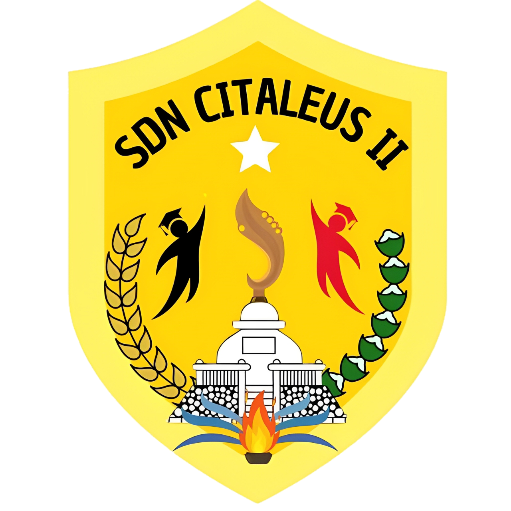

ADMINISTRASI SEKOLAH
Perencanaan Sekolah
Kumpulan berkas perencanaan SD Negeri Citaleus II. Unggah dokumen ke folder GitHub yang sesuai agar tampil sebagai card secara otomatis.
Memuat daftar dokumen…
Memuat dokumen…

SDN CITALEUS IIAdministrasi dan Informasi SekolahKumpulan berkas perencanaan SD Negeri Citaleus II. Unggah dokumen ke folder GitHub yang sesuai agar tampil sebagai card secara otomatis.